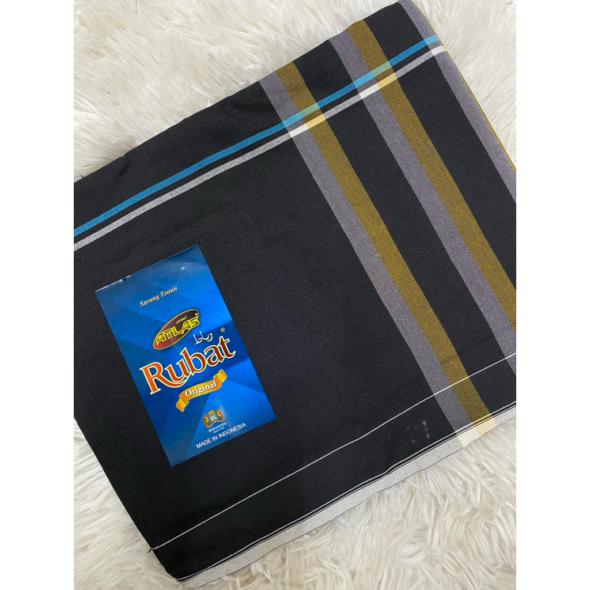
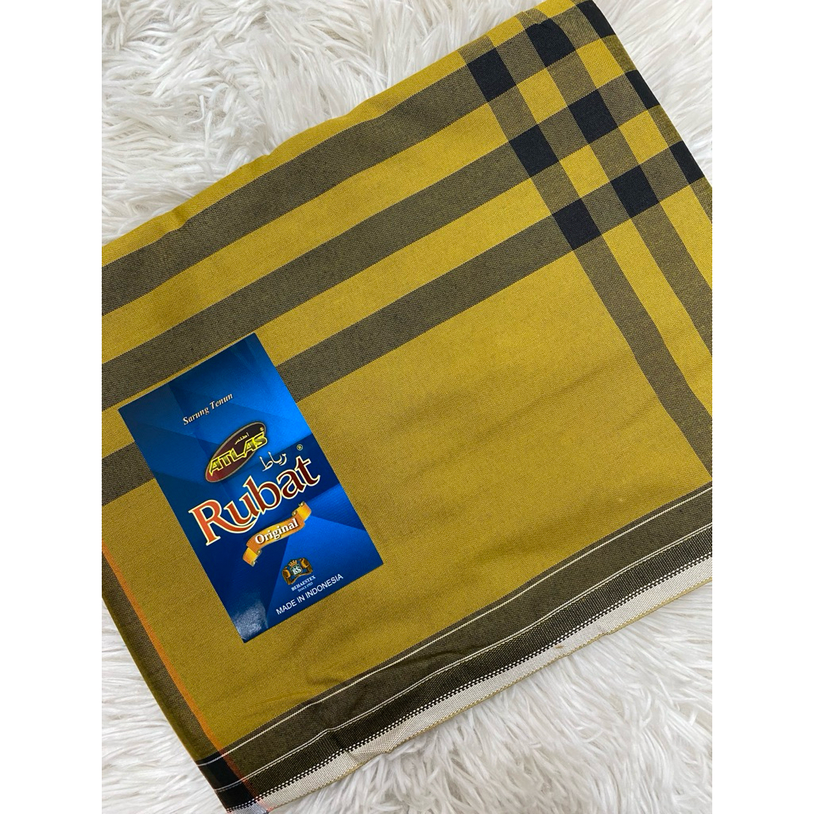
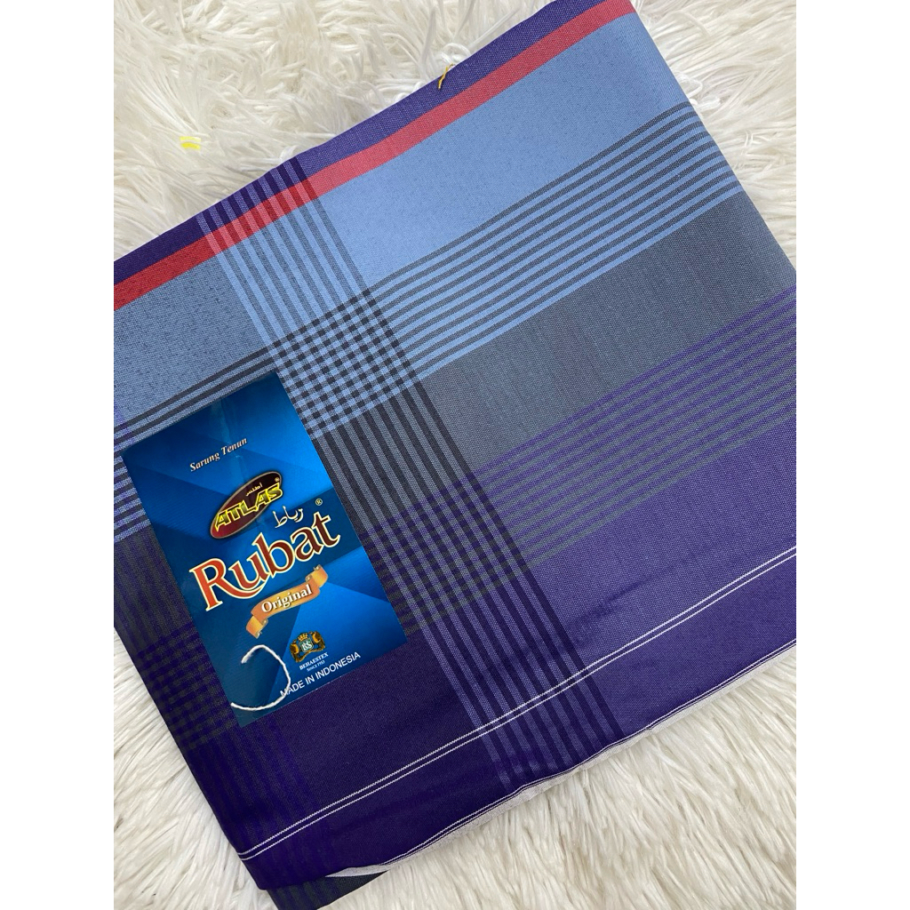
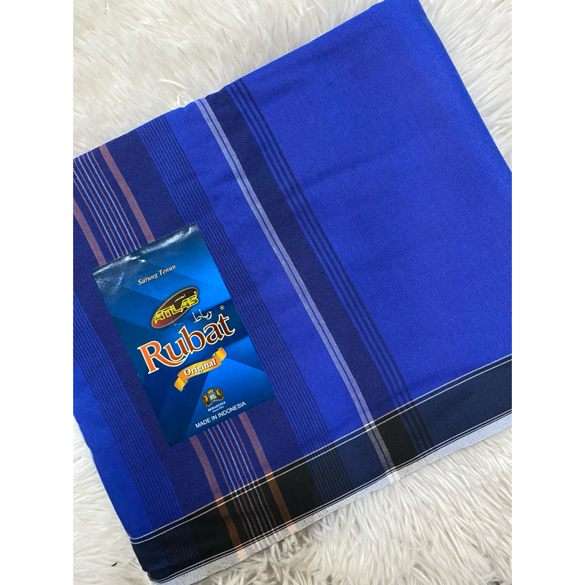

About Kain Pelikat
Kain Pelikat is a traditional checkered sarong widely worn in Malaysia, Indonesia, and Singapore. Known for its bold patterns and lightweight cotton fabric, it is a staple of comfort and cultural identity.

Traditional Pelikat

Traditional Pelikat

Traditional Pelikat

Traditional Pelikat
Soft & Comfortable
Made from cool cotton that's perfect for hot weather.
Colorful Checks
Bright patterns that show local culture and style.
Just Right Size
Long enough (2-2.5m) to wear in different ways.